仰泳腿部技术入门练习（图文）
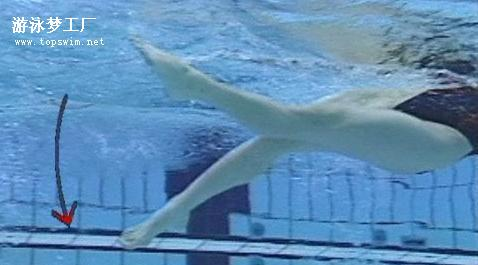
提示
：初学者应先做直腿打水，充分体会大腿的动作，再做屈腿上踢和直腿下压动作。以防出现打水时膝关节露出水面（骑车式打水）或小腿过低（打不出水花）。
一.
池边
坐撑
打水练习：两腿自然伸直，绷脚尖，脚稍内旋（内八字脚），做大腿带动小腿的上下交替打水。要求上踢时将水花踢向前上方。
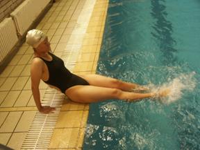
image003.jpg
(12.86 KB)
2010-9-29 20:45
二.
双手
握水线
打水练习：身体自然平直地仰卧水中，两耳没入水中，两眼看天花板，小腹贴住水线做打水练习。重点体会身体在水中的正确姿势。
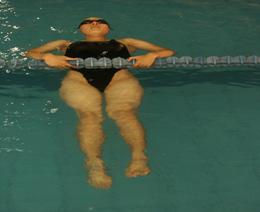
image022.jpg
(6.82 KB)
2010-9-29 20:46
三.
扶水线
打水练习：重点体会展髋、平浮的身体姿势和屈腿上踢、直腿下压动作。上踢时要踢出水花，但脚和膝关节不能露出水面。
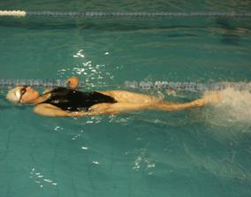
image024.jpg
(9.24 KB)
2010-9-29 20:48
四.
仰卧
抱浮板
打水练习：双手将板放在腹前，腹部贴紧板，板的下沿在大腿的上1/3处（防止出现骑车式打水动作），做打水练习。
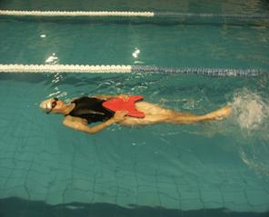
image026.jpg
(10.44 KB)
2010-9-29 20:49
五.
徒手
打水练习：仰卧水中，两臂放于体侧，两腿做鞭状打水动作。
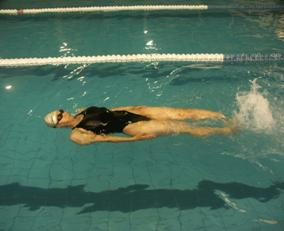
image028.jpg
(10.46 KB)
2010-9-29 20:51
六.
双臂前伸
并拢，两手相叠，头夹在两臂之间，做打水练习。
image030.jpg
(11.09 KB)
2010-9-29 20:53
在topswim上查看原文讨论
保存为pdf格式
 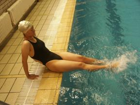
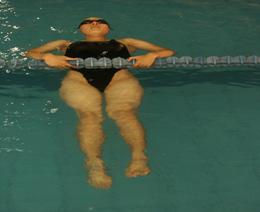
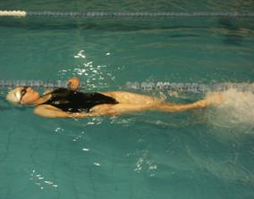
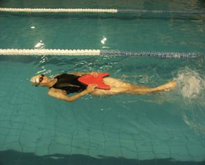
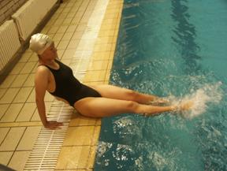
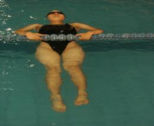
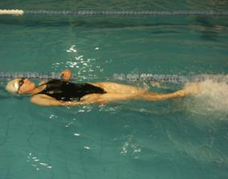
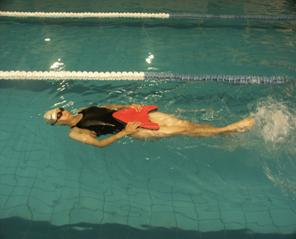